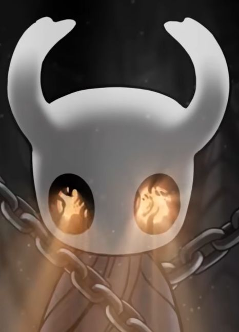
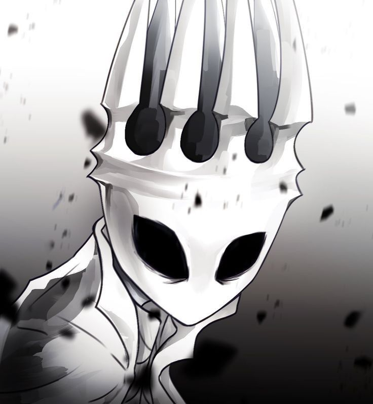
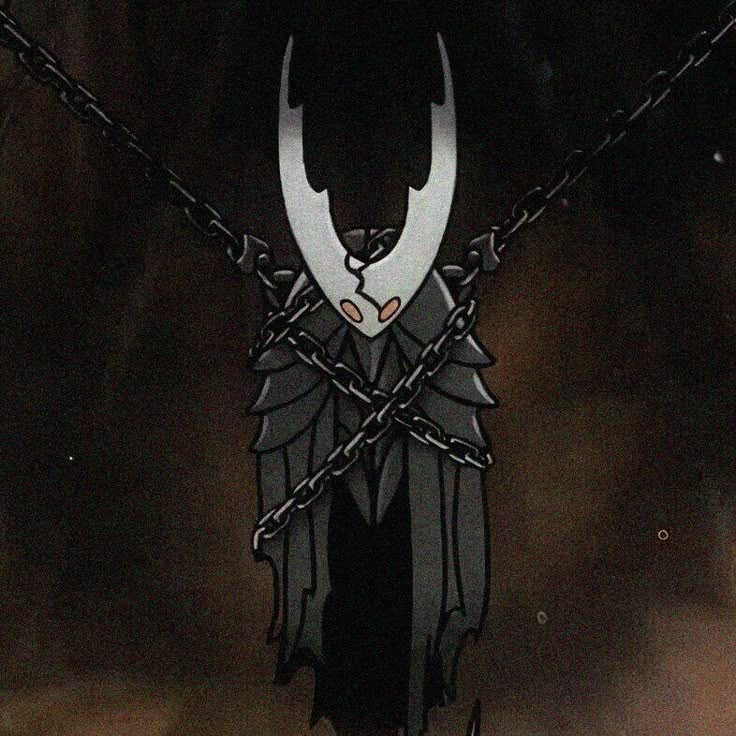
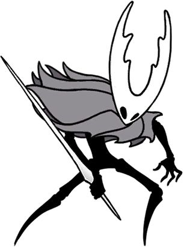

THE VESSEL
THE KNIGHT
Silent, persistent and drawn toward the heart of the ruined kingdom.
ENTERING HALLOWNEST...
THE STORY OF A FORGOTTEN KINGDOM
A cinematic journey through a kingdom buried beneath Dirtmouth, following the silent Knight, Hornet, the Vessels, and the ancient force behind the Infection.
BEGIN THE JOURNEY ↓
CHAPTER I
Beneath the quiet town of Dirtmouth lies Hallownest, a vast kingdom whose greatness has faded into silence. The Knight enters this forgotten world and begins uncovering fragments of a history hidden behind abandoned roads, ancient cities and sleeping temples.


CHAPTER II
The Pale King sought a way to contain the Radiance and the Infection.
From the Abyss came the Vessels, beings shaped to hold that darkness.
The Knight is one of those forgotten Vessels, returning to a kingdom that is slowly waking up.

CHAPTER III
Far below Hallownest lies the place where the Vessels were born. The truth of the Knight's origin is buried here — in darkness, memory and a sea of discarded shells.
CHAPTER IV
Every character carries a fragment of Hallownest's lost history.
Silent, persistent and drawn toward the heart of the ruined kingdom.

A mysterious warrior who watches over Hallownest and tests the Knight.
A world of forgotten paths, ancient ruins, dreams and secrets.
CHAPTER V
The deeper the Knight travels, the clearer the real conflict becomes. The Infection is tied to the Radiance, an ancient presence whose memory refuses to disappear. The kingdom's collapse is the consequence of a forgotten dream returning.
THE JOURNEY
The Knight arrives above the ruins.
The first paths into Hallownest open.
The remains of the old kingdom reveal its scale.
The Knight discovers the truth behind the Vessels.
The journey reaches the heart of the seal.
FINAL CHAPTER
At the Black Egg, the Knight faces the consequence of Hallownest's forgotten past. What happens next depends on how much of the kingdom's mystery has been uncovered.
RETURN TO THE BEGINNING ↑